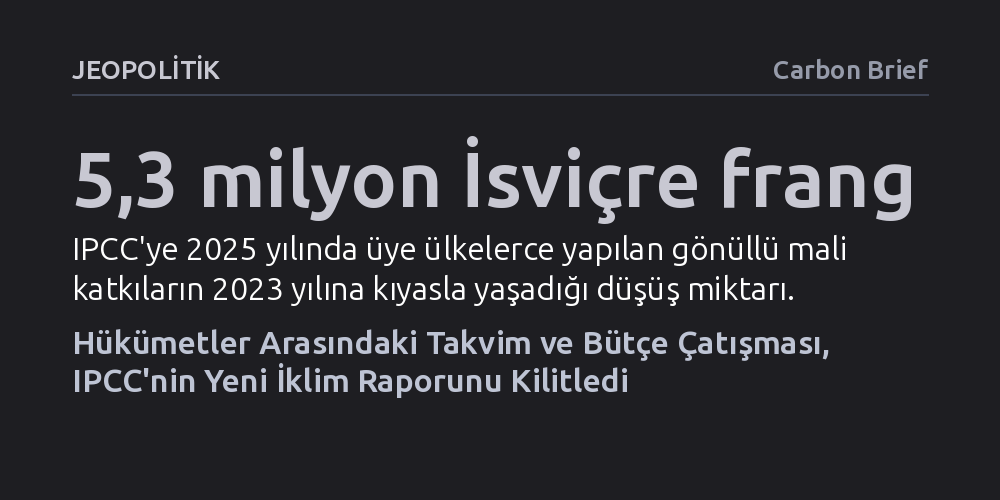

JEOPOLITIK · Carbon Brief · 2026-10-21
Hükümetlerarası İklim Değişikliği Paneli'nin Etiyopya'daki kritik toplantısı, ülkelerin yeni rapor takvimi ve bütçe üzerinde uzlaşamaması nedeniyle askıya alındı. Raporların 2028 Küresel Durum Değerlendirmesi'ne yetişmemesi, uluslararası iklim eylemlerini ve kritik politika kararlarını bilimsel temelden yoksun bırakma riski taşıyor.
Dünyanın en yetkin iklim bilim heyetinin bile jeopolitik çekişmeler ve fon yetersizliği yüzünden felç olabileceğini, bunun da küresel iklim politikalarının en kritik dönemeçte bilimsiz kalmasına yol açacağını gösteriyor.

Hükümetlerarası İklim Değişikliği Paneli'nin (IPCC) Etiyopya'nın başkenti Addis Ababa'da gerçekleştirdiği 65. Genel Kurul toplantısı, hükümetler arasındaki derin görüş ayrılıkları nedeniyle hiçbir karar alınamadan askıya alındı. IPCC Başkanı Prof. Sir Jim Skea'nın oturumu sonlandırırken derin bir hayal kırıklığı olarak nitelediği buluşma, kurum tarihindeki en çetin müzakerelerden birine sahne oldu.
Bu oturum, hazırlanmakta olan 7. Değerlendirme Raporu'nun (AR7) Birleşmiş Milletler'in 2028 yılındaki ikinci Küresel Durum Değerlendirmesi'ne yetişebilmesi için son fırsat sayılıyordu. İklim bilimi, uyum ve sera gazı azaltımı olmak üzere üç temel çalışma grubundan oluşan bu devasa bilimsel külliyatın takvimi, peş peşe yapılan altı uluslararası toplantıda da hükümetlerin vetolarına takılarak kesinleştirilemedi.
Müzakerelerdeki kilitlenme, ülkelerin öncelik farkından kaynaklanan iki ana cephe arasında yaşanıyor. Bir tarafta Avrupa Birliği ülkeleri, gelişmiş ekonomiler ve iklim krizinin doğrudan tehdidi altındaki küçük ada devletleri bulunuyor. Bu koalisyon, Paris Anlaşması kapsamında ülkelerin emisyon hedeflerini ve finansman taahhütlerini gözden geçireceği 2028 zirvesine kadar bilimsel raporların mutlaka masada olması gerektiğini savunuyor. Ada ülkeleri için takvimdeki her yıllık erteleme, telafisi mümkün olmayan insani ve ekonomik kayıplar anlamına geliyor.
Diğer tarafta ise Hindistan, Suudi Arabistan, Rusya ve Kenya gibi ülkelerin başını çektiği bir grup yer alıyor. Bu ülkeler, raporların 2028 sonrasına ertelenmesini talep ederek gelişmekte olan ülkelerin bilimsel taslakları incelemek, ulusal katkı sağlamak ve onay toplantılarına heyet göndermek için zamana ihtiyacı olduğunu öne sürüyor. 2028 takvimini aceleye getirilmiş bir süreç olarak tanımlayan bu ülkeler, kapsayıcılık gerekçesiyle daha uzun bir çalışma planı dayatıyor.
Takvim düğümünü çözümsüz kılan en kritik etkenlerden biri, IPCC'nin içinde bulunduğu benzeri görülmemiş mali kriz oldu. Kurumun bilimsel toplantılarını ve özellikle yoksul ülkelerden gelen araştırmacıların masraflarını karşılayan Güven Fonu hızla eriyor. Tarihsel olarak en büyük bağışçı olan ABD'nin 2024 yılından bu yana fona tek kuruş katkı sağlamaması ve diğer ülkelerin bağışlarındaki gerileme, bütçeyi tükenme noktasına getirdi.
Sekretaryanın sunduğu verilere göre, 2025 yılı bağışları 2023 seviyesine kıyasla 5,3 milyon İsviçre frangı geriledi ve 2026 ortası itibarıyla yalnızca 16 ülke ve kuruluştan mali destek geldi. AR7 döngüsünü tamamlamak için yıllık yaklaşık 8 milyon franka ihtiyaç duyulurken, mevcut gelir tablosu fonun 2028 sonuna kadar tamamen tükeneceğini gösteriyor. Buna rağmen Suudi Arabistan ve Hindistan gibi ülkeler, bütçe kalemlerinin belirli takvim tercihlerine hizmet ettiği iddiasıyla 2026-2027 operasyonel bütçesinin onaylanmasını da engelledi.
Hükümet delegasyonları bütçe ve takvim tartışmalarıyla masayı terk ederken, raporları fiilen kaleme alan yaklaşık 120 bilim insanı yayımladıkları açık mektupla çalışmaya devam edeceklerini ilan etti. Bilim heyeti, dünyayı 2028'deki küresel değerlendirmeyle güncel bilimsel veriden yoksun şekilde yüzleştirmemekte kararlı olduklarını duyurdu. IPCC Başkanı Jim Skea oturum sonunda, "IPCC'nin motor dairesi çalışıyor ve sağlıklı" dese de siyasi kutuplaşmanın doğrudan bilim insanlarının çalışma koşullarını ve takvim güvenliğini tehdit ettiği görülüyor.
Addis Ababa'daki fiyasko yalnızca takvim ve bütçeyle sınırlı kalmadı. Geçmiş dört oturumun toplantı tutanakları dahi ülkelerin üslup ve şeffaflık itirazları yüzünden onaylanamadı; ilke ve usullerin beş yıllık olağan revizyonu bir sonraki toplantıya ertelendi. Yapay zekanın değerlendirmelerde kullanımı ve toplumsal cinsiyet dengesi gibi kurumsal reformlar da diplomatik çekişmelerin gölgesinde askıda kaldı.